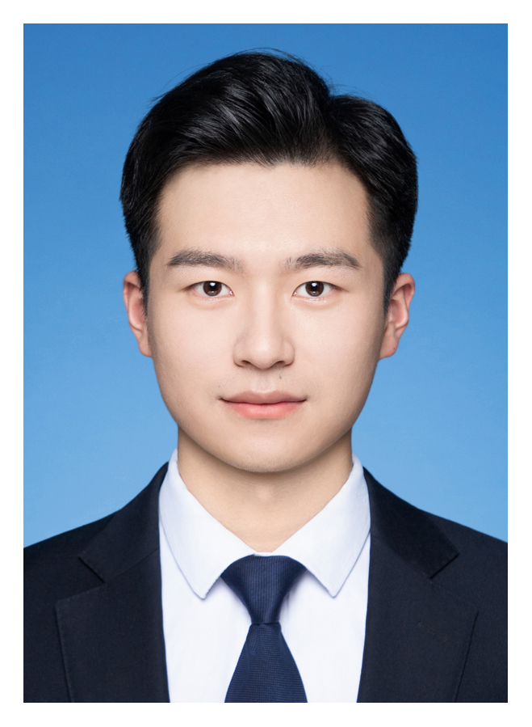

关注人工智能风险治理、虚假信息治理与大数据分析，致力于运用机器学习等量化方法研究人工智能时代的网络安全与公安治理问题。

韩坤，中国人民公安大学公安管理学专业 2025 级博士研究生，师从刘忠轶 教授。
中国人民公安大学
刘忠轶 教授
关注人工智能尤其是生成式 AI 应用中的安全风险识别、评估与治理机制。
研究网络虚假信息的传播规律、主体识别与综合治理。
运用机器学习（如 LightGBM）等数据分析方法进行建模分析。
欢迎通过电子邮件与我交流学术合作与研究议题。
2025111019@stu.ppsuc.edu.cn